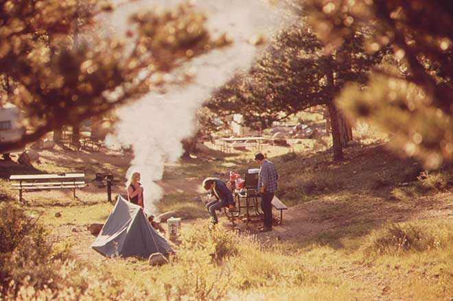

This Week in Genesis: Genesis Camp is live this weekend, Genesis 2.2 Beta 2 is released, a new Genesis Treehouse course from Jesse Petersen, Beaver Builder plans Genesis support, and I finally use a different image for these weekly round-ups.
Genesis Camp!
Yes, Genesis Camp (@genesiscampwp) is live and happening this weekend (18 – 19 July)…
Genesis Camp is on July 18-19, free & live-streamed. Make sure you subscribe at http://t.co/jBKDGXciaf #genesiswp #wp pic.twitter.com/PcWHI2ynH0
— Susan Ramsey (@GraphDesigning) July 16, 2015
…and there are lots of speakers (so many speakers) so make sure you check out the schedule:
The @genesiscampwp Schedule has been published! http://t.co/RuRPUqciIY – it looks like I'm not getting much sleep this weekend! #GenesisWP
— Susan Ramsey (@GraphDesigning) July 14, 2015
To watch them all you need to register:
Join the 271 people who have already registered their spot for Genesis Camp (free online 24+ hour event) here: https://t.co/kJ01UUiybT
— Genesis Camp (@genesiscampwp) July 16, 2015
You might also want to follow along by registering for the popular Genesis Slack chat rooms (if you aren’t already), which will be following along with all the action.
Want to be a part of all the #GenesisWP Camp action? You gotta be in Slack chat. Request your invite here: http://t.co/6DAFnoVpPl
— Sridhar Katakam (@srikat) July 17, 2015
Oh and if you do miss anything, don’t worry. All sessions will be recorded:
@OhHelloDesigns @GraphDesigning They all certainly will be recorded #genesiscamp #GenesisWP
— Genesis Camp (@genesiscampwp) July 14, 2015
Genesis 2.2 Beta 2 Released
If you’re a developer type – or just a Genesis fan – you might want to check out the latest beta of Genesis 2.2.
Genesis 2.2 Beta 2 is now available. Update with this plugin —> https://t.co/lUvhhkPS1h #genesiswp
— Brian Gardner (@bgardner) July 16, 2015
Themes
In theme news, one of my favourite designers, Lauren at Restored 316, launches hew new theme, Style:
Introducing Style: our latest theme built around the professional businesswoman! http://t.co/Txqcjvv6Cm #genesiswp pic.twitter.com/4tCPEjxkER
— Lauren (@restored316) July 14, 2015
Showcase
An interesting new Genesis based website by Black Studio for aqualandia.it (sound plays immediately on loading).
Check out this EXTREME #GenesisWP child theme customization we made: http://t.co/tJkys1pugF
— Black Studio (@blackstudioita) July 13, 2015
A nice looking jiu-jitsu website by Ryan Rudolph for precisionjj.com.
Just launched my jiu-jitsu gym's site! Built on the Grind theme by @themedythemes #genesiswp – http://t.co/YUzdKQAQQE pic.twitter.com/JPAyai67sK
— Ryan Rudolph (@CptRudolph) July 10, 2015
Podcasts
The UK Genesis Podcast spoke to Piccia Neri, an Italian designer, photographer and creative director, based in London.
Did you miss @Piccia on our podcast? No problem – we recorded it, just for you :-) http://t.co/NbIsjtxIRb pic.twitter.com/UO8OHyD75H
— UK Genesis (@UKGenesis) July 15, 2015
This week’s OfficeHours.fm featured an interesting guest in the shape of Barry Kooij. A former WooThemes employee, later with Automattic (after Automattic’s acquisition of WooThemes) Barry decided to leave Automattic due to what he felt was a conflict of interest and his desire to create his own products.
Thanks to all who tuned in and thank you @cageNL for coming on the show! Miss it? You can catch the replay here: http://t.co/Q8vf0qaUca
— Office Hours Podcast (@officehoursfm) July 16, 2015
Beaver Builder planning Genesis support
There are a lot of page builder plugins around these days but one of the most popular seems to be Beaver Builder and in a decision that will probably please a lot of people in the Genesis community, they’ve just announced their plans to include Genesis support.
Beaver Builder planning to incorporate built in genesis support https://t.co/djwsvv2rWp #genesisWP
— Doghouse Media (@doghouse_media) July 14, 2015
And finally…
You can’t keep a good man down and Jesse Petersen is back again, this time with his latest (and I’m sure, greatest) new Treehouse course for Genesis:
Are you wanting to get into #genesiswp theme development but are lost? Check out my new @treehouse course: https://t.co/SQ0yMgOEuj
— Jesse â“Œ Petersen (@jpetersen) July 15, 2015
(The reactions seem pretty good already).
just finished @treehouse course Genesis Theme Development with @jpetersen. It was… AWESOME!!! http://t.co/L4dkxyhqH7
— John Weland (@jweland_me) July 15, 2015
Just finished your new course @jpetersen – Excellent job. Good questions, too. Some great high-lvl insights.
— Patrick O'Dacre (@patrickodacre) July 15, 2015
Like all good things this edition of This Week in Genesis has to come to an end, but the excitement is only just beginning for Genesis Camp this weekend.
If you catch some or all of it this weekend I hope you enjoy it and I’ll be back with another update next week.
Till then, have an awesome one.
PS If you’re a consultant or developer and you’re looking for some extra income or just somewhere to refer enquiries that might not have the budget for you to be able to help personally, I’ve just launched a new affiliate program for ThemeValet my new WordPress website set-up service.
PPS A special thank you to Robin Cornett and Mike Hemberger for being awesome 🙂